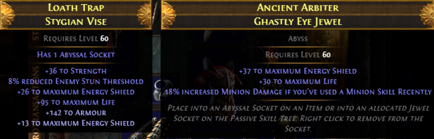

10) 어비스 소켓 허리띠 + 어비스 쥬얼(라이프+에쉴+미니언 관련 옵션, 5 카오스 이상)

어비스 쥬얼이라고, 패시브 스킬 쥬얼에 착용할 수도 있고 어비설 소켓이 있는 일부 장비에 착용 가능한 쥬얼이 있습니다.
이걸 패시브 스킬에도 착용하고, 장비에도 착용하면 좋을 것 같아 저는 이렇게 했습니다.
저는 현재 패시브 노드에 2개, 위의 허리띠에 1개의 어비스 쥬얼을 착용 중입니다.
어비스 쥬얼 옵션을 라이프+에쉴+미니언 관련 옵션으로 잡아서 검색하시면,
수치 높은 것 말고 라이프 에쉴 각각 30 쯤으로 찾으시면 5~10카 정도에 구하실 수 있습니다.
발품을 파셔야 할 수도 있어요.
저는 미니언 스킬 사용시 미니언 데미지 증가 옵션이 달린 것을 샀습니다.
어차피 맵핑하면서 스켈레톤을 주구장창 소환해대니 계속 유지된다고 보면 됩니다.
미니언 관련 옵션 (19.6.10 추가)
- Minions have #% chance to Blind on Hit with Attacks
- Minions have #% chance to Taunt on Hit with Attacks
- Minions have #% increased Movement Speed
- Minions have #% increased Attack and Cast Speed if you or your Minions have Killed Recently
- #% increased Minion Damage if you've used a Minion Skill Recently
허리띠 옵션은 라이프, 에쉴, 레지 적당히 붙은걸로 구매해주시면 됩니다.